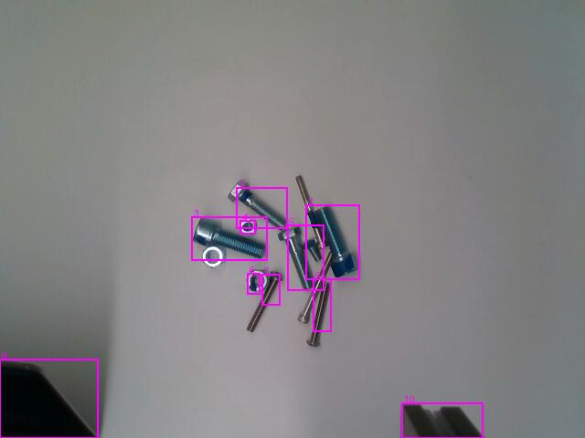
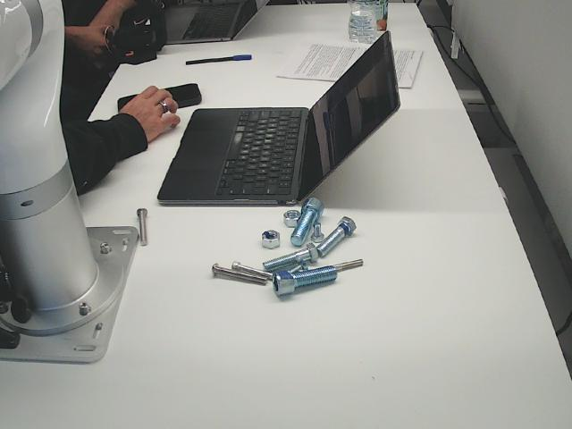
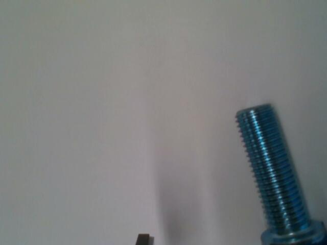
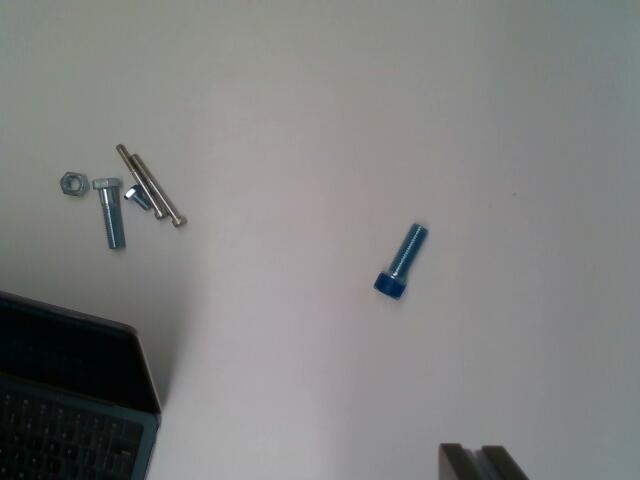

Collected data · exploratory analysis
Snapshot 2026-11-13T16:11:00-05:00. Read-only analysis of files already on disk; not the live robot dashboard.
Full analysis JSON · Per-pick CSV · Per-image CSV
Coverage, not accuracy
- 2 good SKUs with released cycles; 0 have both good and taped examples.
- 0 other-defect cycles; unseen-defect generalization is not established.
- Frames and crops are correlated. Released ≠ training-ready; paired views ≠ full surface coverage.
Next actions · offline first
- Review safety-flagged captures and crop quality before training.
- Audit labels, backfill crop metadata, and split by pick / session.
- Plan missing good SKUs and independent validation / defect holdouts.
Safety: safety-flagged captures require review; upright motion is not verified safe. This report does not authorize any robot run.
Image examples
Top view on the left, webcam crops to the right; up to 3 picks per group. Scroll sideways on a phone or open the full image. Review aids, not approved training labels.
button_ss_long · good · released
hex_bolt_short · tape · released
hex_nut · tape · released
socket_large · good · released
button_ss_long · good · incomplete / failed
socket_large · good · incomplete / failed
unknown · unknown · incomplete / failed
How to read the contact sheets
Up to 3 evenly spaced picks per SKU × label × completion group. Left: last top view (bbox crop + 20 px padding when metadata exists, full frame otherwise). Right: up to 4 webcam crops. Images are downsampled for the report; filenames identify the source. These are review aids, not human-approved labels or masks.
Explore the evidence
Expand a topic for tables, charts and source notes. No collection-mode accuracy or AUROC is claimed.
Planning caveats · safety, sample counts & tape-rule alert
- Count picks, not frames: 43 attempts produced 23 logged released cycles. Full webcam frames and their crops are the same exposure, not two independent samples.
- Normal-data coverage: completed good data covers button_ss_long, socket_large. 5 of those 14 good cycles are in the safety-review session. The kit inventory is only approximate (~7 SKUs). More pictures of one physical part do not add new SKUs or independent objects.
- Type / label confounding: 0 SKUs have both good and taped released captures. A good-vs-tape comparison may just separate part types; collect matching clean/taped examples before interpreting it as defect discrimination.
- Crop readiness: 26/45 top frames have no valid saved bounding box (older runs lack metadata too). Those require detection/cropping before training. 53/56 completed webcam crops with crop metadata touch a sensor boundary (36 cannot be checked); inspect for truncation, not an automatic rejection.
- Unseen defects: 0 released cycles carry an
other:label. This cannot establish generalization to an unseen defect. - Tape-rule alert: 0/9 recorded taped cycles exceed the current 0.02 cutoff. See the saved-score check below; this was not a live sort test.
- Safety review: run
20261113_154405_collectcontains the upright-grasp E-stop incident documented in AGENT_LOG. Its saved images and completed cycles are included for auditing, not certified as safe or training-ready. No robot commands were issued for this EDA.
Inventory · outcomes & class balance
Pick outcomes (all attempts)
Labels · released cycles only
Readable files by role
| Declared SKU | Attempts | Released | Good | Tape | Other defect | Upright released | Webcam crops |
|---|---|---|---|---|---|---|---|
| button_ss_long | 17 | 9 | 9 | 0 | 0 | 0 | 36 |
| hex_bolt_short | 5 | 5 | 0 | 5 | 0 | 0 | 20 |
| hex_nut | 4 | 4 | 0 | 4 | 0 | 0 | 16 |
| socket_large | 8 | 5 | 5 | 0 | 0 | 2 | 20 |
| unknown | 9 | 0 | 0 | 0 | 0 | 0 | 0 |
Labels are operator-entered, not model predictions. Log labels take priority over metadata; conflicts stay visible in the ledger. Missing labels are not inferred from nearby runs. No accuracy/AUROC is claimed from collection-mode decisions.
Run-by-run collection history
| Run | Attempts | Released | Metadata | Files | SKU | Cycle p50 s |
|---|---|---|---|---|---|---|
| 20261113_150512_collect | 1 | 0 | 0 | 0 | unknown | — |
| 20261113_150630_collect | 2 | 0 | 0 | 4 | unknown | — |
| 20261113_151115_collect | 1 | 0 | 0 | 0 | unknown | — |
| 20261113_151143_collect | 2 | 1 | 0 | 10 | hex_nut, unknown | 17.7 |
| 20261113_151342_collect | 1 | 0 | 0 | 0 | unknown | — |
| 20261113_151424_collect | 4 | 3 | 0 | 30 | hex_nut, unknown | 13.8 |
| 20261113_152536_collect | 6 | 5 | 0 | 55 | hex_bolt_short, unknown | 17.6 |
| 20261113_153239_collect | 8 | 0 | 8 | 16 | button_ss_long | — |
| 20261113_153347_collect | 2 | 1 | 1 | 10 | button_ss_long, unknown | 13.3 |
| 20261113_153544_collect | 8 | 8 | 8 | 80 | button_ss_long | 15.0 |
| 20261113_154405_collect | 8 | 5 | 8 | 60 | socket_large | 15.8 |
View coverage & file integrity
| View | Released-cycle crops | Good picks | Tape picks | SKUs | Touches sensor edge |
|---|---|---|---|---|---|
| front | 21 | 12 | 9 | button_ss_long, hex_bolt_short, hex_nut, socket_large | 12 |
| yaw-20 | 21 | 12 | 9 | button_ss_long, hex_bolt_short, hex_nut, socket_large | 12 |
| yaw+35 | 21 | 12 | 9 | button_ss_long, hex_bolt_short, hex_nut, socket_large | 12 |
| pitch-25 | 21 | 12 | 9 | button_ss_long, hex_bolt_short, hex_nut, socket_large | 12 |
| end | 2 | 2 | 0 | socket_large | 2 |
| side0 | 2 | 2 | 0 | socket_large | 1 |
| side+120 | 2 | 2 | 0 | socket_large | 1 |
| side-120 | 2 | 2 | 0 | socket_large | 1 |
Image shapes
Integrity flags · all attempts unless noted
Top-frame geometry by run (only saved metadata)
| Run | Top frames with metadata | Valid bbox | Camera world z p50 mm |
|---|---|---|---|
| 20261113_153239_collect | 8 | 0 | 261.4 |
| 20261113_153347_collect | 1 | 1 | 362.8 |
| 20261113_153544_collect | 8 | 8 | 362.6 |
| 20261113_154405_collect | 12 | 10 | 362.6 |
World z is camera pose, not camera-to-part distance. Run 153239 has no detected top bboxes at the lower camera pose; later button-screw runs have saved bboxes at the higher pose. The contact sheets show the off-frame vs in-frame appearance. This is observational, not a controlled height experiment.
Image quality · focus, exposure & crops
Computed on a grayscale 128×128 resize of each file: mean intensity (0–255), dark ≤5 / bright ≥250 pixels, and variance of a 4-neighbour Laplacian (focus proxy). These include background and gripper, so compare within a view and resolution; they are not part-only quality scores or automatic blur cutoffs.
| File role | n files | Intensity p50 | Focus proxy p50 | Dark % p50 | Bright % p50 |
|---|---|---|---|---|---|
| watch | 36 | 124.9 | 26.7 | 0.0 | 0.0 |
| top | 45 | 121.7 | 30.1 | 0.0 | 0.0 |
| web | 92 | 149.4 | 744.5 | 0.0 | 0.0 |
| crop | 92 | 124.1 | 1058.0 | 0.0 | 0.0 |
Completed webcam crops · brightness vs focus
Completed pick poses
Chart colors: green = declared good, blue = tape, purple = unknown / other. Hover points for source paths. A cluster can reflect the fixed background, not part diversity.
Lowest-focus completed crops to inspect (not automatically bad)
| Image | Focus proxy | Intensity | Label |
|---|---|---|---|
| runs/20261113_154405_collect/item_007/crop_side-120.jpg | 400.03 | 136.95 | good |
| runs/20261113_154405_collect/item_005/crop_side-120.jpg | 454.83 | 141.05 | good |
| runs/20261113_154405_collect/item_005/crop_side+120.jpg | 609.53 | 134.71 | good |
| runs/20261113_154405_collect/item_007/crop_side0.jpg | 621.29 | 134.19 | good |
| runs/20261113_154405_collect/item_007/crop_side+120.jpg | 638.02 | 134.02 | good |
| runs/20261113_154405_collect/item_005/crop_side0.jpg | 661.08 | 134.11 | good |
| runs/20261113_152536_collect/item_005/crop_yaw-20.jpg | 781.3 | 129.4 | tape |
| runs/20261113_152536_collect/item_002/crop_yaw-20.jpg | 794.69 | 129.86 | tape |
Collection performance & placement diversity
| Metric / denominator | n | min | p50 | p95 | max |
|---|---|---|---|---|---|
| First-motion latency (ms) · all logged attempts | 36 | 360.0 | 457.5 | 1298.5 | 1898.0 |
| First-motion latency (ms) · released cycles | 23 | 366.0 | 471.0 | 1214.7 | 1898.0 |
| Cycle (s) · released cycles | 23 | 12.5 | 15.3 | 22.8 | 25.2 |
| Webcam capture (ms) · released view scores | 92 | 86.0 | 187.5 | 343.9 | 815.0 |
| Jaw reading · completed crops with metadata | 56 | 65.0 | 66.0 | 170.2 | 173.0 |
Pick locations (all recorded attempts)
Completed cycles · latency vs duration
Initial part heading · released cycles (modulo 180°)
How the next placement was made (metadata only)
Cycle duration includes movement and collection, not a defect model. This is not a judged throughput benchmark. Initial pick coordinates/headings come from the watch-stage log, not final grasp pose. Repeated placements of one object remain correlated.
Tape-rule scores · saved-score check, not model accuracy
| Declared label | Channel | n scored frames | min | p50 | p95 | max |
|---|---|---|---|---|---|---|
| good | top | 14 | 0.0000 | 0.0000 | 0.0000 | 0.0000 |
| good | webcam | 56 | 0.0000 | 0.0000 | 0.0017 | 0.0034 |
| tape | top | 9 | 0.0000 | 0.0000 | 0.0000 | 0.0000 |
| tape | webcam | 36 | 0.0000 | 0.0001 | 0.0060 | 0.0071 |
Fractions are the runtime blue-pixel rule, not PatchCore anomaly scores. No accuracy estimate is possible from these collection decisions. Denominators differ (top detected bbox vs large webcam crop); do not compare them directly. No labels, thresholds or held-out data were changed. Tape visibility in every view is not guaranteed, and these scores cannot assess unseen defects.
For each released taped pick, take max(top tape fraction, all webcam tape fractions) and compare using the same strict > as sort.py. The largest recorded taped-item fraction is 0.0071. This is a check of saved scores against the literal TAPE_FRAC read from sort.py at analysis time, not a live sort run or an independent accuracy estimate. Review visible tape, labels, hue mask and crop denominators before relying on this channel. No cutoff was changed or tuned.
Duplication & split leakage
Compared top/crop images across different picks only, within the same role, view, declared SKU and label. Exact = SHA-256 match; similar = 64-bit difference-hash distance ≤3. Fixed backgrounds can make distinct parts look similar; this is a review list, not automatic deduplication.
Split by pick at minimum, preferably by collection session / physical object. Keep every top image, webcam frame and crop of one pick in the same split. Dataset manifests are not present in these capture folders, so train/validation separation cannot be verified here. The tiny number of objects means no reliable independent test score yet.
Duplicate / similar-pair source list
| Image A | Image B | Hash distance |
|---|---|---|
| runs/20261113_151143_collect/item_001/crop_yaw+35.jpg | runs/20261113_151424_collect/item_001/crop_yaw+35.jpg | 2 |
| runs/20261113_151143_collect/item_001/crop_yaw+35.jpg | runs/20261113_151424_collect/item_003/crop_yaw+35.jpg | 0 |
| runs/20261113_151424_collect/item_001/crop_yaw+35.jpg | runs/20261113_151424_collect/item_003/crop_yaw+35.jpg | 2 |
| runs/20261113_152536_collect/item_002/crop_pitch-25.jpg | runs/20261113_152536_collect/item_005/crop_pitch-25.jpg | 2 |
| runs/20261113_152536_collect/item_002/crop_yaw+35.jpg | runs/20261113_152536_collect/item_004/crop_yaw+35.jpg | 1 |
| runs/20261113_152536_collect/item_001/crop_yaw-20.jpg | runs/20261113_152536_collect/item_003/crop_yaw-20.jpg | 2 |
| runs/20261113_152536_collect/item_002/crop_yaw-20.jpg | runs/20261113_152536_collect/item_004/crop_yaw-20.jpg | 1 |
| runs/20261113_152536_collect/item_004/crop_yaw-20.jpg | runs/20261113_152536_collect/item_005/crop_yaw-20.jpg | 3 |
| runs/20261113_153239_collect/item_001/top_1.jpg | runs/20261113_153239_collect/item_002/top_1.jpg | 1 |
| runs/20261113_153239_collect/item_001/top_1.jpg | runs/20261113_153239_collect/item_003/top_1.jpg | 0 |
| runs/20261113_153239_collect/item_001/top_1.jpg | runs/20261113_153239_collect/item_004/top_1.jpg | 3 |
| runs/20261113_153239_collect/item_001/top_1.jpg | runs/20261113_153239_collect/item_005/top_1.jpg | 2 |
| runs/20261113_153239_collect/item_001/top_1.jpg | runs/20261113_153239_collect/item_006/top_1.jpg | 1 |
| runs/20261113_153239_collect/item_001/top_1.jpg | runs/20261113_153239_collect/item_007/top_1.jpg | 3 |
| runs/20261113_153239_collect/item_001/top_1.jpg | runs/20261113_153239_collect/item_008/top_1.jpg | 3 |
| runs/20261113_153239_collect/item_002/top_1.jpg | runs/20261113_153239_collect/item_003/top_1.jpg | 1 |
| runs/20261113_153239_collect/item_002/top_1.jpg | runs/20261113_153239_collect/item_004/top_1.jpg | 2 |
| runs/20261113_153239_collect/item_002/top_1.jpg | runs/20261113_153239_collect/item_005/top_1.jpg | 1 |
| runs/20261113_153239_collect/item_002/top_1.jpg | runs/20261113_153239_collect/item_006/top_1.jpg | 0 |
| runs/20261113_153239_collect/item_002/top_1.jpg | runs/20261113_153239_collect/item_007/top_1.jpg | 2 |
| runs/20261113_153239_collect/item_002/top_1.jpg | runs/20261113_153239_collect/item_008/top_1.jpg | 2 |
| runs/20261113_153239_collect/item_003/top_1.jpg | runs/20261113_153239_collect/item_004/top_1.jpg | 3 |
| runs/20261113_153239_collect/item_003/top_1.jpg | runs/20261113_153239_collect/item_005/top_1.jpg | 2 |
| runs/20261113_153239_collect/item_003/top_1.jpg | runs/20261113_153239_collect/item_006/top_1.jpg | 1 |
| runs/20261113_153239_collect/item_003/top_1.jpg | runs/20261113_153239_collect/item_007/top_1.jpg | 3 |
| runs/20261113_153239_collect/item_003/top_1.jpg | runs/20261113_153239_collect/item_008/top_1.jpg | 3 |
| runs/20261113_153239_collect/item_004/top_1.jpg | runs/20261113_153239_collect/item_005/top_1.jpg | 1 |
| runs/20261113_153239_collect/item_004/top_1.jpg | runs/20261113_153239_collect/item_006/top_1.jpg | 2 |
| runs/20261113_153239_collect/item_004/top_1.jpg | runs/20261113_153239_collect/item_007/top_1.jpg | 2 |
| runs/20261113_153239_collect/item_004/top_1.jpg | runs/20261113_153239_collect/item_008/top_1.jpg | 0 |
| runs/20261113_153239_collect/item_005/top_1.jpg | runs/20261113_153239_collect/item_006/top_1.jpg | 1 |
| runs/20261113_153239_collect/item_005/top_1.jpg | runs/20261113_153239_collect/item_007/top_1.jpg | 1 |
| runs/20261113_153239_collect/item_005/top_1.jpg | runs/20261113_153239_collect/item_008/top_1.jpg | 1 |
| runs/20261113_153239_collect/item_006/top_1.jpg | runs/20261113_153239_collect/item_007/top_1.jpg | 2 |
| runs/20261113_153239_collect/item_006/top_1.jpg | runs/20261113_153239_collect/item_008/top_1.jpg | 2 |
| runs/20261113_153239_collect/item_007/top_1.jpg | runs/20261113_153239_collect/item_008/top_1.jpg | 2 |
| runs/20261113_153347_collect/item_001/crop_front.jpg | runs/20261113_153544_collect/item_006/crop_front.jpg | 3 |
| runs/20261113_153544_collect/item_001/crop_front.jpg | runs/20261113_153544_collect/item_002/crop_front.jpg | 2 |
| runs/20261113_153544_collect/item_001/crop_front.jpg | runs/20261113_153544_collect/item_003/crop_front.jpg | 0 |
| runs/20261113_153544_collect/item_001/crop_front.jpg | runs/20261113_153544_collect/item_004/crop_front.jpg | 2 |
| runs/20261113_153544_collect/item_001/crop_front.jpg | runs/20261113_153544_collect/item_007/crop_front.jpg | 1 |
| runs/20261113_153544_collect/item_002/crop_front.jpg | runs/20261113_153544_collect/item_003/crop_front.jpg | 2 |
| runs/20261113_153544_collect/item_002/crop_front.jpg | runs/20261113_153544_collect/item_004/crop_front.jpg | 2 |
| runs/20261113_153544_collect/item_002/crop_front.jpg | runs/20261113_153544_collect/item_007/crop_front.jpg | 3 |
| runs/20261113_153544_collect/item_003/crop_front.jpg | runs/20261113_153544_collect/item_004/crop_front.jpg | 2 |
| runs/20261113_153544_collect/item_003/crop_front.jpg | runs/20261113_153544_collect/item_007/crop_front.jpg | 1 |
| runs/20261113_153544_collect/item_004/crop_front.jpg | runs/20261113_153544_collect/item_007/crop_front.jpg | 3 |
| runs/20261113_153347_collect/item_001/crop_pitch-25.jpg | runs/20261113_153544_collect/item_006/crop_pitch-25.jpg | 2 |
| runs/20261113_153347_collect/item_001/crop_pitch-25.jpg | runs/20261113_153544_collect/item_008/crop_pitch-25.jpg | 1 |
| runs/20261113_153544_collect/item_001/crop_pitch-25.jpg | runs/20261113_153544_collect/item_008/crop_pitch-25.jpg | 3 |
| runs/20261113_153544_collect/item_002/crop_pitch-25.jpg | runs/20261113_153544_collect/item_006/crop_pitch-25.jpg | 2 |
| runs/20261113_153544_collect/item_002/crop_pitch-25.jpg | runs/20261113_153544_collect/item_007/crop_pitch-25.jpg | 2 |
| runs/20261113_153544_collect/item_002/crop_pitch-25.jpg | runs/20261113_153544_collect/item_008/crop_pitch-25.jpg | 3 |
| runs/20261113_153544_collect/item_003/crop_pitch-25.jpg | runs/20261113_153544_collect/item_007/crop_pitch-25.jpg | 2 |
| runs/20261113_153544_collect/item_005/crop_pitch-25.jpg | runs/20261113_153544_collect/item_007/crop_pitch-25.jpg | 3 |
| runs/20261113_153544_collect/item_006/crop_pitch-25.jpg | runs/20261113_153544_collect/item_007/crop_pitch-25.jpg | 2 |
| runs/20261113_153544_collect/item_006/crop_pitch-25.jpg | runs/20261113_153544_collect/item_008/crop_pitch-25.jpg | 1 |
| runs/20261113_153544_collect/item_007/crop_pitch-25.jpg | runs/20261113_153544_collect/item_008/crop_pitch-25.jpg | 3 |
| runs/20261113_153347_collect/item_001/crop_yaw+35.jpg | runs/20261113_153544_collect/item_001/crop_yaw+35.jpg | 2 |
| runs/20261113_153347_collect/item_001/crop_yaw+35.jpg | runs/20261113_153544_collect/item_002/crop_yaw+35.jpg | 2 |
| runs/20261113_153347_collect/item_001/crop_yaw+35.jpg | runs/20261113_153544_collect/item_003/crop_yaw+35.jpg | 1 |
| runs/20261113_153347_collect/item_001/crop_yaw+35.jpg | runs/20261113_153544_collect/item_004/crop_yaw+35.jpg | 2 |
| runs/20261113_153347_collect/item_001/crop_yaw+35.jpg | runs/20261113_153544_collect/item_005/crop_yaw+35.jpg | 1 |
| runs/20261113_153347_collect/item_001/crop_yaw+35.jpg | runs/20261113_153544_collect/item_006/crop_yaw+35.jpg | 2 |
| runs/20261113_153347_collect/item_001/crop_yaw+35.jpg | runs/20261113_153544_collect/item_007/crop_yaw+35.jpg | 0 |
| runs/20261113_153347_collect/item_001/crop_yaw+35.jpg | runs/20261113_153544_collect/item_008/crop_yaw+35.jpg | 0 |
| runs/20261113_153544_collect/item_001/crop_yaw+35.jpg | runs/20261113_153544_collect/item_002/crop_yaw+35.jpg | 2 |
| runs/20261113_153544_collect/item_001/crop_yaw+35.jpg | runs/20261113_153544_collect/item_003/crop_yaw+35.jpg | 1 |
| runs/20261113_153544_collect/item_001/crop_yaw+35.jpg | runs/20261113_153544_collect/item_004/crop_yaw+35.jpg | 2 |
| runs/20261113_153544_collect/item_001/crop_yaw+35.jpg | runs/20261113_153544_collect/item_005/crop_yaw+35.jpg | 3 |
| runs/20261113_153544_collect/item_001/crop_yaw+35.jpg | runs/20261113_153544_collect/item_006/crop_yaw+35.jpg | 2 |
| runs/20261113_153544_collect/item_001/crop_yaw+35.jpg | runs/20261113_153544_collect/item_007/crop_yaw+35.jpg | 2 |
| runs/20261113_153544_collect/item_001/crop_yaw+35.jpg | runs/20261113_153544_collect/item_008/crop_yaw+35.jpg | 2 |
| runs/20261113_153544_collect/item_002/crop_yaw+35.jpg | runs/20261113_153544_collect/item_003/crop_yaw+35.jpg | 1 |
| runs/20261113_153544_collect/item_002/crop_yaw+35.jpg | runs/20261113_153544_collect/item_004/crop_yaw+35.jpg | 0 |
| runs/20261113_153544_collect/item_002/crop_yaw+35.jpg | runs/20261113_153544_collect/item_005/crop_yaw+35.jpg | 3 |
| runs/20261113_153544_collect/item_002/crop_yaw+35.jpg | runs/20261113_153544_collect/item_007/crop_yaw+35.jpg | 2 |
| runs/20261113_153544_collect/item_002/crop_yaw+35.jpg | runs/20261113_153544_collect/item_008/crop_yaw+35.jpg | 2 |
| runs/20261113_153544_collect/item_003/crop_yaw+35.jpg | runs/20261113_153544_collect/item_004/crop_yaw+35.jpg | 1 |
| runs/20261113_153544_collect/item_003/crop_yaw+35.jpg | runs/20261113_153544_collect/item_005/crop_yaw+35.jpg | 2 |
| runs/20261113_153544_collect/item_003/crop_yaw+35.jpg | runs/20261113_153544_collect/item_006/crop_yaw+35.jpg | 3 |
| runs/20261113_153544_collect/item_003/crop_yaw+35.jpg | runs/20261113_153544_collect/item_007/crop_yaw+35.jpg | 1 |
| runs/20261113_153544_collect/item_003/crop_yaw+35.jpg | runs/20261113_153544_collect/item_008/crop_yaw+35.jpg | 1 |
| runs/20261113_153544_collect/item_004/crop_yaw+35.jpg | runs/20261113_153544_collect/item_005/crop_yaw+35.jpg | 3 |
| runs/20261113_153544_collect/item_004/crop_yaw+35.jpg | runs/20261113_153544_collect/item_007/crop_yaw+35.jpg | 2 |
| runs/20261113_153544_collect/item_004/crop_yaw+35.jpg | runs/20261113_153544_collect/item_008/crop_yaw+35.jpg | 2 |
| runs/20261113_153544_collect/item_005/crop_yaw+35.jpg | runs/20261113_153544_collect/item_006/crop_yaw+35.jpg | 3 |
| runs/20261113_153544_collect/item_005/crop_yaw+35.jpg | runs/20261113_153544_collect/item_007/crop_yaw+35.jpg | 1 |
| runs/20261113_153544_collect/item_005/crop_yaw+35.jpg | runs/20261113_153544_collect/item_008/crop_yaw+35.jpg | 1 |
| runs/20261113_153544_collect/item_006/crop_yaw+35.jpg | runs/20261113_153544_collect/item_007/crop_yaw+35.jpg | 2 |
| runs/20261113_153544_collect/item_006/crop_yaw+35.jpg | runs/20261113_153544_collect/item_008/crop_yaw+35.jpg | 2 |
| runs/20261113_153544_collect/item_007/crop_yaw+35.jpg | runs/20261113_153544_collect/item_008/crop_yaw+35.jpg | 0 |
| runs/20261113_153347_collect/item_001/crop_yaw-20.jpg | runs/20261113_153544_collect/item_004/crop_yaw-20.jpg | 2 |
| runs/20261113_153347_collect/item_001/crop_yaw-20.jpg | runs/20261113_153544_collect/item_006/crop_yaw-20.jpg | 0 |
| runs/20261113_153347_collect/item_001/crop_yaw-20.jpg | runs/20261113_153544_collect/item_008/crop_yaw-20.jpg | 1 |
| runs/20261113_153544_collect/item_004/crop_yaw-20.jpg | runs/20261113_153544_collect/item_006/crop_yaw-20.jpg | 2 |
| runs/20261113_153544_collect/item_004/crop_yaw-20.jpg | runs/20261113_153544_collect/item_008/crop_yaw-20.jpg | 1 |
| runs/20261113_153544_collect/item_006/crop_yaw-20.jpg | runs/20261113_153544_collect/item_008/crop_yaw-20.jpg | 1 |
| runs/20261113_154405_collect/item_003/top_1.jpg | runs/20261113_154405_collect/item_005/top_1.jpg | 3 |
| runs/20261113_154405_collect/item_002/crop_pitch-25.jpg | runs/20261113_154405_collect/item_003/crop_pitch-25.jpg | 2 |
First 100 pairs shown; full list in JSON (101 total).
Background comparison · separate experiment
| Experiment | Background | Frames | Target detected | Hand flagged | Motion commanded |
|---|---|---|---|---|---|
| background_ab_20261113_155517 | cardboard | 10 | 10 | 10 | False |
| background_ab_20261113_155517 | white | 10 | 10 | 0 | False |
Counts are recorded detector outputs, not independent trials or hand-labelled ground truth. Consecutive frames of a static scene do not establish robustness or a causal improvement. Kept separate from pick counts and anomaly-training data.
Full collection priorities & offline work lanes
- Review the safety-flagged session and crop quality before promoting any images to training. Upright motion is not verified safe; no suggestion here authorizes another arm run.
- Fill good-SKU gaps rather than repeating the two available good types. Get independently repositioned, visually reviewed top and checkpoint images; explicit physical-part IDs will make the split defensible.
- Backfill / repair metadata offline: legacy top crops lack bboxes; retain failure examples for detector debugging, not normal-model training.
- Reserve separate good validation sessions before filling PatchCore banks, then collect a protected unseen-defect holdout with staff permission. Do not tune thresholds on it.
- Offline agents can parallelize now: one builds masks/canonical crops; one audits labels and contact sheets; one makes group-wise split manifests. None needs control of the arm.
All picks · searchable audit ledger
| Pick | SKU | Label | Outcome | Pose | Top files | Crop views | Cycle s | Review notes |
|---|---|---|---|---|---|---|---|---|
| 20261113_150512_collect/item_001 | unknown | unknown from unknown | unlogged | unknown | 0 | 0 | — | missing metadata; no decision log row |
| 20261113_150630_collect/item_001 | unknown | unknown from unknown | none | unknown | 3 | 0 | — | missing metadata |
| 20261113_150630_collect/item_002 | unknown | unknown from unknown | unlogged | unknown | 0 | 0 | — | missing metadata; no decision log row |
| 20261113_151115_collect/item_001 | unknown | unknown from unknown | unlogged | unknown | 0 | 0 | — | missing metadata; no decision log row |
| 20261113_151143_collect/item_001 | hex_nut | tape from log | collect | unknown | 1 | 4 | 17.7 | missing metadata |
| 20261113_151143_collect/item_002 | unknown | unknown from unknown | unlogged | unknown | 0 | 0 | — | missing metadata; no decision log row |
| 20261113_151342_collect/item_001 | unknown | unknown from unknown | unlogged | unknown | 0 | 0 | — | missing metadata; no decision log row |
| 20261113_151424_collect/item_001 | hex_nut | tape from log | collect | unknown | 1 | 4 | 12.5 | missing metadata |
| 20261113_151424_collect/item_002 | hex_nut | tape from log | collect | unknown | 1 | 4 | 13.8 | missing metadata |
| 20261113_151424_collect/item_003 | hex_nut | tape from log | collect | unknown | 1 | 4 | 17.1 | missing metadata |
| 20261113_151424_collect/item_004 | unknown | unknown from unknown | unlogged | unknown | 0 | 0 | — | missing metadata; no decision log row |
| 20261113_152536_collect/item_001 | hex_bolt_short | tape from log | collect | lying | 1 | 4 | 17.6 | missing metadata |
| 20261113_152536_collect/item_002 | hex_bolt_short | tape from log | collect | lying | 2 | 4 | 22.5 | missing metadata |
| 20261113_152536_collect/item_003 | hex_bolt_short | tape from log | collect | lying | 1 | 4 | 15.2 | missing metadata |
| 20261113_152536_collect/item_004 | hex_bolt_short | tape from log | collect | lying | 1 | 4 | 14.4 | missing metadata |
| 20261113_152536_collect/item_005 | hex_bolt_short | tape from log | collect | lying | 2 | 4 | 25.2 | missing metadata |
| 20261113_152536_collect/item_006 | unknown | unknown from unknown | none | unknown | 2 | 0 | — | missing metadata |
| 20261113_153239_collect/item_001 | button_ss_long | good from meta | none | unknown | 1 | 0 | — | part not seen from hover |
| 20261113_153239_collect/item_002 | button_ss_long | good from meta | none | unknown | 1 | 0 | — | part not seen from hover |
| 20261113_153239_collect/item_003 | button_ss_long | good from meta | none | unknown | 1 | 0 | — | part not seen from hover |
| 20261113_153239_collect/item_004 | button_ss_long | good from meta | none | unknown | 1 | 0 | — | part not seen from hover |
| 20261113_153239_collect/item_005 | button_ss_long | good from meta | none | unknown | 1 | 0 | — | part not seen from hover |
| 20261113_153239_collect/item_006 | button_ss_long | good from meta | none | unknown | 1 | 0 | — | part not seen from hover |
| 20261113_153239_collect/item_007 | button_ss_long | good from meta | none | unknown | 1 | 0 | — | part not seen from hover |
| 20261113_153239_collect/item_008 | button_ss_long | good from meta | none | unknown | 1 | 0 | — | part not seen from hover |
| 20261113_153347_collect/item_001 | button_ss_long | good from log | collect | lying | 1 | 4 | 13.3 | good |
| 20261113_153347_collect/item_002 | unknown | unknown from unknown | unlogged | unknown | 0 | 0 | — | missing metadata; no decision log row |
| 20261113_153544_collect/item_001 | button_ss_long | good from log | collect | lying | 1 | 4 | 15.3 | good |
| 20261113_153544_collect/item_002 | button_ss_long | good from log | collect | lying | 1 | 4 | 16.7 | good |
| 20261113_153544_collect/item_003 | button_ss_long | good from log | collect | lying | 1 | 4 | 16.3 | good |
| 20261113_153544_collect/item_004 | button_ss_long | good from log | collect | lying | 1 | 4 | 15.5 | good |
| 20261113_153544_collect/item_005 | button_ss_long | good from log | collect | lying | 1 | 4 | 12.7 | good |
| 20261113_153544_collect/item_006 | button_ss_long | good from log | collect | lying | 1 | 4 | 13.4 | good |
| 20261113_153544_collect/item_007 | button_ss_long | good from log | collect | lying | 1 | 4 | 14.7 | good |
| 20261113_153544_collect/item_008 | button_ss_long | good from log | collect | lying | 1 | 4 | 14.1 | good |
| 20261113_154405_collect/item_001 | socket_large | good from meta | none | upright | 2 | 0 | — | run-level safety review: E-stop incident (AGENT_LOG) |
| 20261113_154405_collect/item_002 | socket_large | good from log | collect | lying | 1 | 4 | 13.6 | run-level safety review: E-stop incident (AGENT_LOG) |
| 20261113_154405_collect/item_003 | socket_large | good from log | collect | lying | 1 | 4 | 15.8 | run-level safety review: E-stop incident (AGENT_LOG) |
| 20261113_154405_collect/item_004 | socket_large | good from meta | none | upright | 2 | 0 | — | run-level safety review: E-stop incident (AGENT_LOG) |
| 20261113_154405_collect/item_005 | socket_large | good from log | collect | upright | 1 | 4 | 22.0 | run-level safety review: E-stop incident (AGENT_LOG) |
| 20261113_154405_collect/item_006 | socket_large | good from log | collect | lying | 1 | 4 | 13.0 | run-level safety review: E-stop incident (AGENT_LOG) |
| 20261113_154405_collect/item_007 | socket_large | good from log | collect | upright | 1 | 4 | 22.8 | run-level safety review: E-stop incident (AGENT_LOG) |
| 20261113_154405_collect/item_008 | socket_large | good from meta | none | lying | 3 | 0 | — | run-level safety review: E-stop incident (AGENT_LOG) |
Method, scope and snapshot warnings
*_collect/item_* plus background* metadata; excludes dry runs, simulations, telemetry frame copies, and reference frames
Released = decision log says collect and has t_released. This proves the software recorded release, not successful grasp, physical release or data quality. Complete multiview = released + readable top + ≥4 matching web/crop names, not surface-coverage certification. Empty item directories are retained as attempts. Percentiles are linear interpolation; missing fields are excluded and every summary shows its own n.
Source files are never edited; only downsampled contact sheets and analysis exports are generated. Capture may continue during analysis. Rebuild the snapshot explicitly with python site/eda.py && python site/build.py (Pillow required for analysis). The project-progress percentages are a separately dated planning estimate, not recomputed from these capture counts.
Parse issues: 0. Source files changed while scanning: 0.
Progress
Planning snapshot · Fri 13 Nov, 15:35 (day 1). Historical estimates, not live completion or model results. Use the data overview above for measured capture counts.
Workstreams, task evidence & timeline · dated planning estimate
Bars weight tasks by rough effort. Evidence and status below are preserved as of the planning date, not re-verified by this page build.
whole project, 15 of 33 tasks done
Motion is ahead of plan; perception is the critical path.
Live pick → checkpoint → place already works (an 18:00 goal). The 13:00 goal "first anomaly scores on our camera" hasn't happened, and DECIDE still runs on the tape rule alone, which can't catch the judges' unseen defect. The gap is good-part data for most SKUs and a trained model. 62% of the remaining work doesn't need the arm, so it can run in parallel (lanes below).
Workstreams
Perception and model (A)
41%4 of 11 tasks done
Tasks
| done | Tape colour rule on the top look and every webcam view sort.py tape_fraction, TAPE_FRAC 0.02, decides live | offline |
| done | Collect mode: per pick top + webcam views + meta.json runs/*_collect: 25 picks so far | arm |
| done | Empty-gripper webcam references, 8 views config/webcam_refs/ | arm |
| done | PatchCore → OpenVINO training + runtime, verified vs torch sorter/: AUROC 1.0 on MVTec, |Δscore| 0.0015, 73 ms CPU f16 (r18) | offline |
| 15% | Good-part data for every SKU 8 picks of 1 clean SKU (button-head) out of ~7 | arm |
| 40% | Taped-part data hex nut ×4, short hex bolt ×5: 2 of ~5 taped SKUs | arm |
| to do | Holdout unseen-defect set (marker, sticker, other tape) none yet; never used for tuning | arm |
| to do | Dataset builder: runs/ → train / val / holdout, split by pick DATA_PLAN.md specifies it | offline |
| to do | Per-view PatchCore banks trained on our crops top/lying, top/upright + one per webcam view | offline |
| to do | Anomaly score wired into DECIDE sort.py: anomaly = None placeholder | offline |
| to do | Thresholds from val/good, calibrated on the deploy device f16 shifts scores up to 0.1 | station |
Motion and grasping (B)
74%5 of 9 tasks done
Tasks
| done | Measured poses, table z, obstacles config/poses.json, obstacles.json | arm |
| done | Webcam calibrated, checkpoint over the reject compartment DLT from 18 fingertip positions; view joints recorded | arm |
| done | Lying parts: pick, views, place taped nut + bolt, latency 366–433 ms, cycle 12.5–17 s | arm |
| 75% | Upright parts: height check, grasp halfway, side views one run (5 picks); threshold moved 40 → 15 mm | arm |
| 55% | Every SKU grasped at least once nut, short hex bolt, socket screw, button-head: 4 of ~7 | arm |
| done | Releases wait for open fingers; pick zone on the bare table fixes from the 15:20 runs | arm |
| 50% | Long legs as recorded joint moves were 4.0 s and 7.3 s via the planner; joint moves in sort.py, check every leg | arm |
| done | Recovery L1 (item moved) + L2 (missed grasp) built, emits recovery events | offline |
| to do | Recovery L3: item taken from the gripper in transit poll holding + jaw ~10 Hz, stop(); then one arm test | offline |
Station and diagnostics (C)
45%4 of 7 tasks done
Tasks
| done | Live dashboard: both cameras, inspection strip, map dashboard/server.py :8765 | offline |
| done | Telemetry overhead measured 23–74 µs per event, never blocks | offline |
| done | First-motion latency measured 366–433 ms on live picks | arm |
| done | Benchmark tool for CPU / GPU / NPU sorter/benchmark.py (run on the M2 only) | offline |
| to do | Benchmark run on the station's CPU / GPU / NPU Devices = 10% of the score | station |
| to do | Loop deployed and running on the station laptop RPCs add 85–230 ms each | station |
| to do | Device-placement story with numbers which model on which device, and why | offline |
Integration and story (D)
45%2 of 6 tasks done
Tasks
| done | sort.py loop end to end on the arm (collect mode) watch → pick → checkpoint → place, live | arm |
| done | Judge log with ms timestamps runs/<run>/decisions.jsonl | offline |
| 40% | Sort mode (the judged run) live on the arm built, decides on tape; every live run so far is collect | arm |
| to do | Log format + latency timestamp confirmed with staff open question since 13:00 | people |
| to do | Five-minute rehearsals, teammate as judge (≥5) 0 of 5 | arm |
| 30% | Design explanation (5 min) this site + NOTES.md; no slides yet | offline |
Timeline
- ✓ Station probed, Track 3 scoped
- ✓ Table obstacle on
- ✓ Hover test
- ✓ Webcam tested
- ✗ First anomaly scores on our camera
- ◐ Staff questions answered
- ✓ Pick → present → place on real parts
- ✗ Own top-view model
- ◐ Diagnostics numbers
- ✗ Webcam-view model
- ✗ L3 recovery
- ✗ Loop on the station
- ✗ ≥5 rehearsals
- ✗ Rehearse, fix, rehearse
- ✗ Numbers + explanation
What can run in parallel
The arm is the one serial resource (one driver at a time). Lanes 2–5 never move it, so separate agents can take them now. Data flows 1 → 2 → 3; lane 4 calibrates what lane 2 trains.
1 · Arm lane (one driver, serial) arm
- Collect good parts of every SKU (biggest gap), then taped variants, then the holdout set
- Verify every long leg is a recorded joint move
- Live sort-mode runs, then rehearsals with a teammate as judge
Feeds lane 2 with data. Everything else is built to plug into it without blocking it.
2 · Model agent offline
- Dataset builder: runs/ → train / val / holdout by pick
- Train per-view PatchCore banks with sorter/train_detector.py on the 25 picks we have; retrain as lane 1 adds data
- Validate with synthetic defects; per-view false-alarm rate on good parts
Outputs model files + thresholds for lane 3. Can start now on the existing runs.
3 · Integration agent offline
- Anomaly score into DECIDE (behind a flag, tape rule stays)
- L3: holding + jaw poll during moves, stop(), re-run as the same item
- Test both on the fake station
Build in vh/ and hook into sort.py in one small diff: sort.py is being edited by the arm session.
4 · Station agent station
- setup on the station, run the loop there in dry run
- benchmark.py on CPU / GPU / NPU; check PatchCore compiles on the NPU
- Calibrate thresholds on the deploy device
Never moves the arm. Gives the Devices score (10%) its numbers.
5 · Story (human + agent) people
- Confirm log format and latency timestamp with staff
- Draft the 5-min explanation from NOTES.md and this site
No code dependencies; can run all evening.
Design reference
Original design notes and proposed behavior, not a verification of the current robot. Expand only what you need.
Architecture · cycle, route & recovery
Start state → end state
One item at a time: a judge places a single item, we decide and sort it, then the next one comes. Six cycles in five minutes.
Initial state (each cycle)
- Table empty in the pick zone; arm at home (= watch pose), gripper open, models warm on the GPU, our loop running on the station
- A judge places one fastener, any position and orientation; tape possibly facing the table; at least one item over the run has a defect type we've never seen
- The judge may move the item while the arm is on its way, or later
- Box (good) and reject bin (defective / unsure) at fixed, taught positions; the fixed camera aimed at the checkpoint on the way to both
Final state (after 6 cycles)
- All 6 items in the box or the reject bin, none dropped, pick zone empty
- Log: exactly one line per item: number, decision, confidence, timestamp (+ our extra fields)
- Arm back home, gripper empty, no faults
- Diagnostics saved: per-device benchmarks, live latency stats, per-item views and heatmaps for the explanation
One cycle
Our part of a cycle: ≈15–20 s at the arm's 60 deg/s. Six cycles plus the judge placing each item fit in 5 minutes with room for a retry. Holding is monitored during every move after the grasp (L3).
The route for one item
How I read the plan: both boxes sit on the line from the arm to the backboard, reject first, good second. The check happens in the air directly above the reject box, with the webcam looking past the part at the backboard. A defect is dropped right there (shortest path). Only a part that passes travels on to the good box. The reject path is a strict prefix of the good path, so a defect never costs extra motion.
Why it's diametrically opposed by construction
The wrist cam looks along the gripper's axis. At the hover that axis points down, so it images the top. The grasp keeps the part fixed in the fingers, and at the checkpoint the same axis points at the webcam, so the webcam looks back along it: the bottom. Opposite faces, one stop, no searching. Only the band under the finger pads is grazing in both; one optional tilt at the same stop covers it.Why each camera faces where it does
- Webcam: no depth (plain
rdk:builtin:webcam, 640×480). It can only separate the part from the background by looks, so it faces the plain backboard. - Wrist RealSense: has depth. It doesn't need a clean background: keep only pixels within a set distance of the part (or above the table) and the busy scene behind is cut off.
- So the busy side of the room is always behind the depth camera's subject, and the plain side is always behind the webcam's subject.
Constraints this layout creates
- The reject box sits under the webcam's line of sight. Its near wall must be lower than ≈71 mm or it hides the part. A low tray works; a tall box needs the checkpoint raised
- The good box sits behind the part in the image only below ~143 mm: boxes under ~14 cm stay out of the background
- Keep the laptop off the area left of the webcam (blocks a side view)
Time per item (measured moves)
| watch → hover | 1.4 s |
| look + aim | 0.9 s |
| descend + grab + lift | 2.4 s |
| lift → checkpoint | ≈1.5 s |
| still + capture + score | 0.4 s |
| defect: open | 0.8 s |
| good: → box, lower, open | ≈2.3 s |
| → home | 1.2 s |
≈ 11 s for a defect, ≈ 13 s for a good part. Six items ≈ 75 s of our time.
Measured: webcam lens, backboard, checkpoint pose (reached live), table height. Assumed: box positions and sizes (drawn 15 × 16 cm, reject 6 cm tall, good 10 cm), pick zone. Tell me where the boxes actually go and I'll redraw and re-plan the checkpoint over the reject box.
Recovery levels
Ordered by how likely the judge is to do it and how cheap it is for us. The weighted rubric doesn't list recovery separately; it most likely protects execution (30%). Ask staff how it's scored.
Item moved while the arm approaches
- The hover close-up re-looks right before descending (already in the flow)
- Shifted → re-aim; rotated → new grasp yaw
- Gone from view → back to WATCH
Grasp missed (moved at the last moment)
- After closing:
is_holding_something+ jaw position ≈ part width (fully closed = empty) - Empty → open, back to hover, re-look, retry ×2
Item taken out of the gripper in transit
- No pressure sensor needed: the gripper reports an object-detected flag and its jaw position; the jaws close further when the part leaves
- Poll both at ~10 Hz while the arm moves (a ~10 ms call on the station); lost →
arm.stop() - The checkpoint frame double-checks a part is there
- Then back to WATCH, same item number, re-run
Items taken out of a bin, swapped mid-inspection
Swaps are covered by L3 + re-deciding. Items moved after they land in a bin aren't ours to fix.recoveries count, so a retried item still produces one line.Judging · scoring & trade-offs
What the judges measure
Reference sheet weights. Detection is scored from our own log: no log, no decision or latency points.
- Decision 30% precision + recall of defects, from our log
- Execution 30% item ends where we decided
- Latency 10% item seen → first arm motion (correct items)
- Devices 10% device placement, measured via diagnostics
- Design 20% 5-min explanation
Decision (30%) in practice
With 6 items, every mistake is ~15–30% of this bucket. A false reject (good → reject) costs precision; a missed defect (defect → box) costs recall.Execution (30%) is separate
A wrong decision placed correctly still scores execution: the item ended where we decided. Grasp reliability is worth as much as detection.Latency only counts correct items
Inspection moves count as the response, so latency is the time to notice the part, not to classify it.Detection · cases, coverage & decision rule
The core problem: defect and good are not symmetric
“Defective” needs one piece of evidence.
One view with tape or a strong anomaly is enough. That's why the tape-up case is easy.“Good” needs the absence of evidence everywhere.
“I didn't see a defect” only means “good” if we looked at the whole surface, well enough to have seen one. The no-defect case and the hidden-tape case are the same problem: coverage.More views → fewer misses…
Each extra view uncovers surface where a defect could hide, so recall goes up.…but more chances to false-alarm
Each view of a good part is another chance for a spurious high score. With N views, per-view false alarms add up: set per-view thresholds so the whole item stays within a false-alarm budget (e.g. per-view ≈ budget / N).Cases, ranked by how they fail
Separated items mean finding parts is simple blob detection on a white table. These are the detection cases we need to cover.
| Case | Difficulty | Who can see it | How it fails | Mitigation |
|---|---|---|---|---|
| Tape facing up | easy | Wrist hover close-up (top) | None really; tape is high-contrast | Confident reject from the initial guess; checkpoint just confirms |
| Tape facing the table | medium | Checkpoint view (fingertips at the camera) | Top view says clean → would box it | Never box on the initial guess alone; decide at the checkpoint |
| Tape where the fingers grip | hard | Only grazing views / nobody | Pads cover it; looks clean everywhere | Grip bolts by the head; ±45° tilt; regrasp once if ‘good’ |
| Tiny tape (e.g. bolt tip) | medium | Close-up views only | Too few pixels from the watch pose (1 mm/px) | Decide from close-ups, never from the watch frame |
| Good item | hard | Must see all surfaces | Any one view false-alarms → false reject | Coverage + per-view thresholds set jointly for a false-alarm budget |
| Unseen defect: appearance (marker, sticker, rust, paint) | medium | Anomaly model, any view | Tape rule misses it; subtle ones score low | PatchCore trained on good only; test on a held-out defect set |
| Unseen defect: shape (bent, wrong length, stripped thread) | medium | Silhouette + depth | Texture model may not care about shape | Primitive fit: length/width/straightness vs known part types |
| Judge moves the item during the approach | medium | Hover close-up | Grasp at a stale position | L1: re-look at hover, re-aim / new yaw; gone → back to watching |
| Judge moves it at the last moment | medium | Gripper state | Closes on nothing | L2: holding flag + jaw width; retry ×2 |
| Judge takes it out of the gripper | hard | Gripper state + checkpoint frame | Arm carries nothing to a bin; log is wrong | L3: poll ~10 Hz during moves, stop, re-run as the same item |
Coverage: can two cameras see 360°?
Almost. A top-down grasp leaves the face that was on the table facing out past the fingertips. So pointing the fingertips at the fixed camera shows exactly the hidden side. Spinning about the gripper's own axis only rotates the picture; tilting shows the sides.
Views per item
- Wrist close-up, top-down, before the grasp
- Fingertips at the fixed camera (underside)
- Tilt −45°
- Tilt +45°
The blind spot
The finger contact patches sit at the shank's “equator”, which every view sees only at a grazing angle. Tape exactly there is our worst case.Closing it
- Grip bolts by the head, so the whole shank is free
- For items that still look good: put down, regrasp rotated 90°, one more underside view (~6 s, only on ‘good’ items)
Decision rule and confidence
box if all views below threshold and coverage ≥ C_min
else → one more view (regrasp) if time allows, otherwise reject (unsure = reject)
confidence(reject) = how far the worst view is past its threshold (calibrated on validation scores)
confidence(box) = coverage × how far the worst view is below its threshold
Coverage comes from the primitive model below: the fraction of the part's surface seen at a useful angle and resolution.
Is there alpha in 3D reconstruction (3DGS, NeRF, MERF)?
Not for detection. Reconstruction can only re-render what some camera already saw.
Our failure mode is unobserved surface. A radiance field doesn't create evidence for a face nobody imaged; it would hallucinate it. It also needs dozens of posed views and minutes of GPU per item, mostly in CUDA code. It isn't an OpenVINO model, so it doesn't help the device-placement story either. And depth won't find tape: the wrist camera is RGB-D, but tape is ~0.1 mm thick.The 3D idea that does pay is cheap and geometric: model each part type as primitives (cylinder shank, hex head/nut) and use that to account for coverage and catch shape defects.
| Approach | What it gives | Cost | Why it matters (or not) | Verdict |
|---|---|---|---|---|
| 3DGS / NeRF / MERF | Photoreal novel views from many posed images | 30–100+ views, accurate poses, minutes of GPU per item; mostly CUDA code; not an OpenVINO model | Can only re-render what some camera saw. Hidden faces stay hidden (or get hallucinated). It doesn't add evidence. | no |
| Primitive models + coverage map | Which % of each part's surface was seen, in which view, at what resolution | Cylinder / hex prism per part type, view poses we already know; ms of CPU | Turns ‘looks clean’ into ‘looked clean over 93% of the surface’ → honest confidence, tells us when to take another view | yes |
| Primitive fit for shape defects | Length, width, straightness, head size vs known types | Silhouette from the survey / close-up + depth; ms of CPU | Catches geometric unseen defects (bent, wrong length) a texture model may miss | yes |
| Unwrap the shank onto a strip (texture atlas) | One canonical ‘unrolled’ image per part from all views | View poses + cylinder model + blending; a few hours to build | Clean input for the anomaly model and a great demo visual; not needed to win | stretch |
Evaluation plan · station images & open questions
Our evals (mirror the judging)
1. Offline replay (no arm needed)
Every rehearsal saves all views of every item. Re-run detection with new models or thresholds over the whole history in seconds. Report:- Precision / recall / confusion per case (rows of the table above)
- Per-view and per-item false-alarm rate on good parts
- Score margins: how far good and defective sit from the threshold
2. Rehearsal kits (arm in the loop)
Scripted 6-item kits, timed 5-minute runs, a teammate as judge:- Kit A: tape up/down mix · Kit B: tape at the grip · Kit C: all good · Kit D: unseen defects · Kit E: the judge moves the item (L1 during approach, L2 at grasp, L3 out of the gripper)
- Score each run exactly like the judges: decision P/R from the log, execution, latency of correct items
3. Held-out defect discipline
Keep a set of defects nobody trains or tunes on (marker, sticker, bent bolt, paint, other-colored tape). It's our only honest stand-in for the judges' unseen type. Tuning on it means fooling ourselves.4. Numbers for the pitch
Per-device benchmark table (ov-diag), per-stage latency waterfall, confusion matrix per kit, coverage per item, and a short list of what failed and what we changed.What the station sees today




Open questions
For staff
- How is recovery scored (inside execution, or separately)?
- May we move the overview-cam stand to aim at our checkpoint?
- Where can the judge place the item: anywhere in reach, or a marked zone?
- Which log timestamp do they use for latency?
For us to test
- Webcam focus and resolution at 20 / 30 / 40 cm
- Grasp by the head vs the shank, per part type
- Jaw width when holding each part type vs fully closed (L2/L3 signal)
- Per-view false-alarm rate on good parts
Assumptions on this page
- One item on the table at a time
- Unsure = reject (reject bin = hold area)
- Inspection moves count as the response
- The judge may move the item before or after the grasp